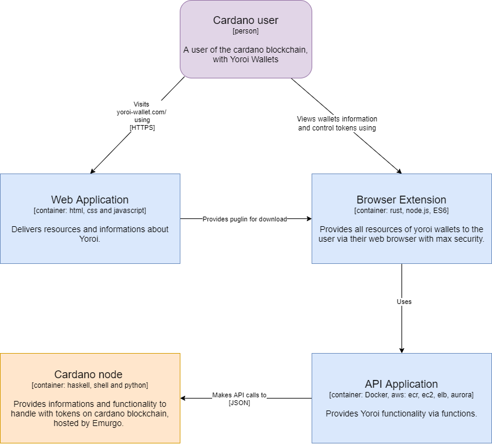
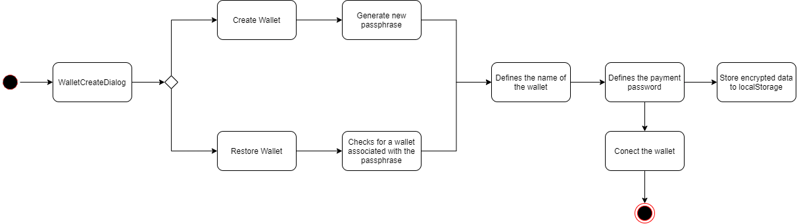

Yoroi Wallet - Documentação arquitetural
Autores
Este documento foi produzido por Lourival Gonçalves Prata Netto.
- Matrícula: 119111236
- Contato: lourival.netto@ccc.ufcg.edu.br
- Projeto documentado: https://github.com/Emurgo/yoroi-frontend
Descrição Arquitetural
Este documento descreve parte da arquitetura do projeto Yoroi Wallet. Essa descrição foi baseada principalmente no modelo C4.
Descrição Geral sobre a Yoroi Wallet
A Yoroi Wallet é uma carteira para armazenar criptomoedas da blockchain Cardano. É simples, rápida e segura. Yoroi é um produto da Emurgo, desenvolvido pela IOHK. E segue as melhores práticas para software na indústria, incluindo a auditoria de segurança abrangente.
Contexto

A yoroi-frontend wallet é uma carteira leve e rápida da rede de blockchain cardano, estando ela disponível como uma extensão de navegadores. Fornecendo através de uma interface amigável diversas funcionalidades da rede, como criação ou restauração de carteiras, informações sobre as próprias carteiras, envio ou recebimento de tokens, informações sobre stakepools e a possibilidade de delegar os seus tokens. A yoroi-frontend também se destaca por ser mais leve que outras carteiras, visto que não tem a necessidade de sincronizar toda a rede de blockchain no aparelho do usuário, já que ela recorre a um cardano-node já sincronizado em servidores da empresa parceira EMURGO.
Containers

A yoroi-frontend processa todas as informações no aparelho do usuario, já para poder realizar interações com a rede de blockchain é feita requisições a API do cardano-node que está sendo executado no servidor da EMURGO.
Componentes

Por ser um sistema mais leve e simples, é possível trazer os componentes comumente mais utilizados, sendo eles:
-
Criação/Restauração de wallets: Responsável pela geração ou verificação das passphrases e a geração de senhas de pagamento
-
Ledger: Responsável pela conexão de carteiras digitais com uma carteira física através do bluetooth, funcionando assim como uma camada a mais de segurança.
-
Dashboard: Componente responsável por reunir informações sobre a carteira e os tokens delegados na stakepool, assim como quais as suas recompensas a ser resgatada.
-
Send: Componente responsável por realizar verificação e envios de tokens para outros endereços de carteira.
-
Receive: Componente responsável pelo armazenamento, geração de novos endereços associado a carteira e QR Codes.
-
Delegate: Componente responsável por reunir informações sobre stakepools disponíveis na rede, e permitindo também selecionar qual delas o usuário gostaria de delegar seus tokens.
Visão de informação

A maquina de estados acima representa os estados decorridos ao tentar criar ou restaurar wallets.